대기환경기사 (2010-09-05 기출문제)
1과목: 대기오염 개론
1. 다음 중 일반적으로 대도시의 산성강우 속에 가장 미량(mg/L)으로 존재할 것으로 예상되는 것은? (단, 산성강우는 pH 5.6으로 본다)
- SO4-2
- NO3-
- Cl-
- OH-
(정답률: 79%)

2. 다음 중 각 대기오염물질이 인체에 미치는 영향에 관한 설명으로 가장 거리가 먼 것은?
- 카드뮴 화합물이 만성 폭로되어 발생하는 흔한 증상으로 단백뇨가 있다.
- 알킬수은 화합물의 탄소-수은 결합은 약하므로 중추신경계에 축적되기보다는 변을 통해 쉽게 배출된다.
- 체내에 흡수된 크롬은 간장, 신장, 폐 및 골수에 축적되며, 대부분은 대변을 통해 배설된다.
- 니켈은 위장관으로 거의 흡수되지 않으며 가용성 니켈염과 니켈 카르보닐은 호흡기를 통해 쉽게 흡수된다.
(정답률: 66%)
3. 최대혼합고도를 300m로 예상하여 오염물질 농도를 5ppm으로 예측하였다. 그러나, 실제 관측된 최대혼합고도는 500m이었다. 이 때 실제 나타날 오염농도는?
- 1.08ppm
- 1.80ppm
- 2.31ppm
- 8.23ppm
(정답률: 57%)
4. 자동차에서 배출되는 오염물질에 관한 설명으로 가장 거리가 먼 것은?
- 공연비(AFR)가 15에서 20으로 커질 때 질소산화물의 농도는 대수적으로 증가한다.
- NOx는 공회전에 비해 가속 시 배출농도(ppm)가 높다.
- CO(%)와 HC(ppm) 농도는 공연비가 낮으면 높고, 이론 공연비보다 높으면 낮다.
- 배기가스의 조성은 차의 노후정도, 주행속도, 외기온도, 습도 등에 따라 차이가 있다.
(정답률: 52%)
5. 대기오염물질과 그 영향에 관한 연결로 가장 거리가 먼 것은?
- Oxidant - 눈을 자극
- CO - 혈액의 O3 운반기능 저해
- HF - 고농도시엔 호흡기 점막자극
- Pb 화합물 - 헤모글로빈의 형성억제
(정답률: 53%)
6. 바람을 일으키는 힘 중 코리올리 힘에 관한 설명으로 가장 적합한 것은?
- 속력에만 영향을 미칠 뿐, 운동방향은 변화시키지 않는다.
- 지구의 자전운동에 의해서 생기는 가속도에 의한 힘을 말한다.
- 극지방에서 최소가 되며 적도지방에서 최대가 된다.
- Gradient wind 라고도 하며, 대기의 운동방향과 반대의 힘인 마찰력으로 인하여 발생한다.
(정답률: 52%)
7. 다음 중 황화수소의 배출과 가장 관련이 깊은 업종은?
- 피혁, 합성수지, 포르마린 제조
- 비료, 표백, 색소제조
- 고무가공, 청산, 석면제조
- 석유정제, 석탄건류, 가스공업
(정답률: 69%)
8. A굴뚝의 실제높이가 30m 이고, 굴뚝 반지름은 2m 이다. 이 때 배출가스의 분출속도가 20m/s 이고, 풍속이 5m/s 일 때, 유효굴뚝높이는? (단, Δh=1.5×
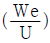
× D이용)- 24m
- 34m
- 44m
- 54m
(정답률: 64%)
9. 다음은 대기 중의 CO2 농도변화 경향에 대한 설명이다. ( )안에 알맞은 것은?
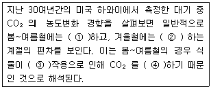
- ① 감소, ② 증가, ③ 광합성, ④ 흡수
- ① 증가, ② 감소, ③ 광합성, ④ 방출
- ① 감소, ② 증가, ③ 호흡, ④ 흡수
- ① 증가, ② 감소, ③ 호흡, ④ 방출
(정답률: 66%)
10. 다음 중 실내공기 오염에 관한 설명으로 옳지 않은 것은?
- CO가 NO에 비해 혈중 헤모글로빈과의 결합력이 낮다.
- CO2는 정상 공기중에서 약 0.3 - 0.4% 정도 존재하며, 10% 이상에서는 보통 두통 및 어지럼증을 느끼기 시작한다.
- 공기 중 세균의 위해성은 실내공기 오염의 지표 관점에서 볼 때 자체 병원성보다 오히려 세균수가 문제시된다.
- 라돈은 화학적으로는 거의 반응을 일으키지 않고 흙 속에서 방사선 붕괴를 일으킨다.
(정답률: 65%)
11. 대기 열역학 복사이론 중 스테판- 볼츠만 법칙을 나타낸 식으로 가장 적합한 것은? (단, E: 흑체의 단위 표면적에서 복사되는 에너지, T : 흑체의 표면온도(절대온도), K : 스테판-볼츠만 상수, 단위는 모두 적절하다고 가정함)
- E = K × T
- E= K ÷ T
- E = K × T4
- E= K ÷ T4
(정답률: 78%)
12. 다음은 황화합물에 관한 설명이다. ( ) 안에 가장 적합한 물질은 ?
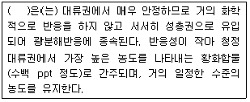
- 황화수소 (H2S)
- 이산화황 (SO2)
- MSA (CH3SO3H)
- 카르보닐황 (OCS)
(정답률: 52%)
13. 다음 특정물질 중 오존파괴지수가 가장 높은 것은?
- CH3CFCl2
- CCl4
- C2H3Cl3
- C2F5Cl
(정답률: 68%)
14. 굴뚝에서 배출되는 연기의 확산형태 중 역전층이 존재하는 형태로만 분류된 것은?
- Fumigation , Coning , Lofting
- Looping , Fanning , Fumigation
- Fanning , Lofting , Trapping
- Coning , Looping , Fanning
(정답률: 62%)
15. 다음은 어떤 물질에 관한 설명인가?
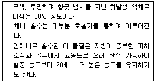
- Benzene
- Toluene
- Carbon Disulfide
- Phenol
(정답률: 66%)
16. 다음은 바람과 대기오염과의 설명이다. ( )안에 알맞은 것은?
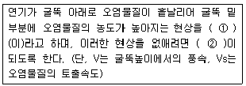
- ① Down Wash , ② Vs ＞ 2V
- ① Down Wash , ② V ＞ 2Vs
- ① Blow Down , ② Vs ＞ 2V
- ① Blow Down , ② V ＞ 2Vs
(정답률: 64%)
17. 대류권 내 건조대기의 성분 및 조성에 관한 설명으로 옳지 않은 것은?
- 농도가 매우 안정된 성분으로 산소, 질소, 이산화탄소, 아르곤 등이다.
- 이산화질소, 암모니아 성분은 농도가 쉽게 변하는 물질에 해당한다.
- 오존의 평균농도는 0.1 - 1ppm 정도로 지역별 오염도에 따라 일변화가 매우 크다.
- 질소, 산소를 제외하고 가장 큰 부피를 차지하고 있는 물질은 아르곤이다.
(정답률: 75%)
18. Richardson 수(Ri)의 크기가 0 ＜ Ri ＜ 0.25 범위일 때, 대기의 혼합상태로 옳은 것은?
- 수직방향의 혼합이 없다.
- 대류에 의한 혼합이 기계적 혼합을 지배한다.
- 성층(Stratification)에 의해서 약화된 기계적 난류가 존재한다.
- 기계적 난류와 대류가 존재하나 기계적 난류가 혼합을 주로 일으킨다.
(정답률: 58%)
19. 성층권 내의 지상 25-30km 부근에서의 O3의 최고농도로 가장 적합한 것은?
- 1 ppt 정도
- 10 ppt 정도
- 1000 ppm 정도
- 10000 ppb 정도
(정답률: 59%)
20. 광화학반응과 관련된 오염물 일변화의 일반적인 특징으로 가장 거리가 먼 것은?
- NO와 HC의 반응에 의해 오전 7시경을 전후로 NO2가 상당한 율로 발생하기시작한다.
- NO에서 NO2로의 산화가 거의 완료되고 NO2가 최고농도에 도달하는 때부터 O3가 증가되기 시작한다.
- Aldehyde는 O3의 일중 최고농도(오후 2시경) 이후에 생성되기 시작하여 O3의 감소에 대응한다.
- 주요 생성물로는 PAN , H2O2 , Ketone 등이 있다.
(정답률: 45%)
2과목: 연소공학
21. 다음 중 기체의 연소속도를 지배하는 주요인자와 가장 거리가 먼 것은?
- 발열량
- 촉매
- 산소와의 혼합비
- 산소농도
(정답률: 68%)
22. 저위발열량이 4900Kcal/Sm3 인 가스연료의 이론연소온도는 몇 ℃인가? (단, 이론연소가스량 10Sm3 /Sm3 , 기준온도 15℃ , 연료연소가스의 평균정압비열 0.35kcal /Sm3ㆍ ℃ 공기는 예열되지 않으며, 연소가스는 해리되지 않는 것으로 한다.)
- 1015℃
- 1215℃
- 1415℃
- 1615℃
(정답률: 56%)
23. 다음 중 유류 종류별 버너의 유량조절범위의 크기 순서로 옳은 것은? (단, 큰 순서 ＞ 작은 순서)
- 유압식 ＞ 고압공기식 ＞ 저압공기식
- 저압공기식 ＞ 고압공기식 ＞회전식
- 고압공기식 ＞ 회전식 ＞ 유압식
- 회전식 ＞ 저압공기식 ＞ 고압공기식
(정답률: 80%)
24. 다음 중 연료의 이론공기량의 근사치 범위 Ao (Sm3 /Sm3)로 가장 거리가 먼 것은?
- 천연가스 : 8.0 ~ 9.5
- 역청탄 : 7.5 ~ 8.5
- 코크스 : 8.0~ 9.0
- 발생로가스 : 5.0 ~8.0
(정답률: 56%)
25. Propane의 고위발열량이 23,000kcal /Sm3 일 때 저위발열량(kcal /Sm3)은?
- 약 20010
- 약 21080
- 약 22600
- 약 23030
(정답률: 62%)
26. 미분탄연소로에 사용되는 버너중 접선기울기형버너( tangential tilting burner )에 관한 설명으로 거리가 먼 것은?
- 선회흐름을 보일러에 활용한 것으로 선회버너라고도 하며. 연소로 외벽으로 화염을 분산 ㆍ 형성한다.
- 사각연소로인 경우 각 모퉁이에 3~5개의 버너가 높이가 다르게 설치되어 있다.
- 1차 공기 및 석탄 주입관 끝은 10~30° 정도의 각도범위에서 조절할 수 있도록 되어 있다.
- 화염을 상하로 이동시켜서 과열을 방지할 수 있도록 되어있다.
(정답률: 49%)
27. 다음 연소방식 및 연소장치에 관한 설명으로 거리가 먼 것은?
- 확산연소는 화염이 길고 그을음이 발생하기 쉽다.
- 예혼합연소는 혼합기의 분출속도가 느릴 경우 역화의 위험이 있으므로 역화방지기를 부착해야 한다.
- 유동층에서는 저열량연료, 점착성연료는 적용이 불가능하며, 탈황제의 주입 시 별도로 배연탈황설비가 필요하다.
- 기화연소는 연료를 고온의 물체를 접촉 또는 충돌시켜 액체를 가연성 증기로 변환 후 연소시키는 방식이다.
(정답률: 69%)
28. 다음 중 분무각도가 40-90° 정도로 크며, 유량조절범위가 다른 버너에 비해 적어 부하변동에 적응하기 어렵고, 대용량 버너제작이 용이한 유류 버너 형태는?
- 저압공기식 버너
- 고압공기식 버너
- 회전식 버너
- 유압분무식 버너
(정답률: 57%)
29. 액화프로판 660kg을 기화시켜 4Sm3/h로 태운다면 몇 시간 사용할 수 있는가?
- 48시간
- 56시간
- 64시간
- 84시간
(정답률: 47%)
30. 다음 설명하는 액체연료에 해당하는 것은?
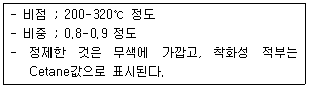
- Naphtha
- Heavy Oil
- Light Oil
- Kerosene
(정답률: 64%)
31. 폐가스 소각과 관련한 다음 설명 중 가장 거리가 먼 것은?
- 직접화염 재연소기의 설계 시 반응시간은 1-3초 정도로 하고, 이 방법은 다른 방법에 비해 NOx 발생이 적다.
- 직접화염 소각은 가연성 폐가스의 배출량이 아주 많은 경우에 유용하다.
- 촉매산화법은 고온연소법에 비해 반응온도가 낮은 편이다.
- 촉매산화법은 저농도의 가연물질과 공기를 함유하는 기체 폐기물에 대하여 적용되며 보통 백금 및 파라디움이 촉매로 쓰인다.
(정답률: 66%)
32. 수소 8%, 수분 0.9% 포함된 고체연료의 고위 발열량이 10000kcal/kg일 때 이 연료의 저위 발열량은?
- 9224 kcal/kg
- 9350 kcal/kg
- 9563kcal/kg
- 9745 kcal/kg
(정답률: 62%)
33. 화학반응속도론에 관한 다음 설명 중 가장 거리가 먼 것은?
- 영차반응은 반응속도가 반응물의 농도에 영향을 받지 않는 반응을 말한다.
- 화학반응속도는 반응물이 화학반응을 통하여 생성물을 형성할 때 단위시간당 반응물이나 생성물의 농도변화를 의미한다.
- 화학반응식에서 반응속도상수는 반응물 농도와 관련된다.
- 일련의 연쇄반응에서 반응속도가 가장 늦은 반응단계를 속도결정단계라 한다.
(정답률: 68%)
34. 액화석유가스(LPG)에 관한 설명으로 가장 거리가 먼 것은?
- 메탄, 프로판을 주성분으로 하는 혼합물로 1atm에서 -168℃ 정도로 냉각하면 쉽게 액체상태로 된다.
- 비중은 공기의 1.5-2.0배 정도로 누출 시 인화의 위험성이 크다.
- 천연가스 회수, 나프타 분해, 석유정제 시 부산물 등으로부터 얻어진다.
- 액체에서 기체로 될 때 증발열이 있다.
(정답률: 58%)
35. NH3를 제조하는 작업장(10m × 100m × 10m)에서 NH3 4kg 이 누출되어 전 작업장 내로 확산되었다. 이 때 송풍능력 100m3/min 송풍기를 사용하여 허용농도로 환기시키는데 소요되는 시간은? (단, -d[A] / dt = K[A] , NH3 허용농도 25ppm , 표준상태기준)
- 약 5시간
- 약 7시간
- 약 10시간
- 약 12시간
(정답률: 42%)
36. 다음의 기체연료 1Sm3를 이론적으로 완전연소시키는데 가장 많은 이론산소량(Sm3)을 필요로 하는 것은? (단, 동일조건)
- Methane
- Hydrogen
- Ethane
- Acetylene
(정답률: 53%)
37. 등가비 ( Φ , Equivalent Ratio )에 관한 설명으로 옳지 않은 것은?
- 등가비 ( Φ ) =

- Φ ＜ 1 경우 완전연소가 기대되며 CO는 최소가 된다.
- Φ = 1 경우 완전연소로서 연료와 산화제의 혼합이 이상적이다.
- Φ ＞ 1 경우 불완전연소가 발생하며 질소산화물(NO)이 최대가 된다.
(정답률: 53%)
38. 현열에 관한 용어 설명으로 가장 적합한 것은?
- 물질에 의하여 흡수 또는 방출된 열이 온도변화로 나타나지 않고, 상태변화에만 사용되는 열
- 물질에 의하여 흡수 또는 방출된 열이 온도변화로 나타나고, 물질의 상태변화에는 사용되지 않는 열
- 물질에 의하여 흡수 또는 방출된 열이 물질의 모든 변화로 나타나는 열
- 물질에 의하여 흡수 또는 방출된 열이 계의 열용량에만 관계하고, 물질의 상태변화 또는 온도변화에는 사용되지 않는 열
(정답률: 43%)
39. 액체연료에 관한 설명 중 가장 거리가 먼 것은 ?
- 기체연료에 비해 밀도가 커 저장에 큰 장소를 필요로 하지 않고 연료의 수송도 간편한 편이다.
- 완전연소시 다량의 과잉공기가 필요하므로 연소장치가 대형화되는 단점이 있으며, 소화가 용이하지 않다.
- 화재, 역화 등의 위험이 있고, 연소온도가 높기 때문에 국부가열의 위험성이 존재한다.
- 국내자원이 적고, 수입에의 의존 비율이 높으며 회분은 거의 없으나 재속의 금속산화물이 장해원인이 될 수 있다.
(정답률: 58%)
40. 황함유량이 질량 %로 1.4%인 중유를 매시 109톤 연소시킬 때 SO2의 배출량(Sm3/h)은 ? (단, 표준상태를 기준으로 하고, 황은 100% 반응하며, 이 중 5%는 SO3로 배출, 나머지는 SO2로 배출된다. )
- 931 Sm3/h
- 980 Sm3/h
- 1015 Sm3/h
- 1068 Sm3/h)
(정답률: 47%)
3과목: 대기오염 방지기술
41. 전기집진장치의 먼지 제거효율을 91.8%에서 99%로 증가시켰을 때, 집진극의 면적은 어떻게 변화되어야 하는가? (단, 나머지 조건은 일정하다고 가정함)
- 집진극 면적은 1.24배 증가
- 집진극 면적은 1.54배 증가
- 집진극 면적은 1.84배 증가
- 집진극 면적은 2.14배 증가
(정답률: 67%)
42. 관성력집진장치에 관한 설명으로 옳지 않은 것은?
- 함진 가스의 충돌 또는 기류의 방향전환 직전의 가스속도가 빠르고 방향 전환시의 곡률반경이 작을수록 미세입자의 포집이 가능하다.
- 일반적으로 고온가스의 처리가 불가능하므로 굴뚝이나 배관 등은 적용하기 어렵다.
- 액체입자의 포집에 사용되는 Multi Baffle형은 1㎛ 전후의 미스트를 제거할 수 있지만 완전한 처리를 위해서는 처리가스 출구에충전층을 설치하는 것이 좋다.
- Pocket형, Channel형과 같이 미로형에서는 먼지가 장치에 누적되므로 먼지의 성상을 충분히 파악하여 충격, 세정에 의하여 제거할 필요가 있다.
(정답률: 35%)
43. 지름 20cm, 유효높이 3m인 원통형 Bag Filter로 4.5×106cm3/sec의 함진가스를 처리하고자 한다. 여과속도를 0.04m/sec로 할 경우 필요한 Bag Filter수는 얼마인가?
- 35개
- 60개
- 70개
- 120개
(정답률: 55%)
44. 휘발성 유기화합물질(VOCs) 제거방법에 관한 설명으로 가장 거리가 먼 것은?
- 촉매소각에서 촉매의 수명은 한정되어 있는데, 이는 저해물질이나 먼지에 의한 막힘, 열노화 등에 의해 촉매활성이 떨어지기 때문이다.
- 흡수(세정)법에서 흡수장치는 Con-current 나 Cross 형태로 가스상과 액상이 흐르는 경우도 있으나, 대부분은 Counter-Current 형태가 일반적이다.
- 흡수(세정)법에서 분사실은 VOC 흡수를 위해 충진제를 사용하고, 주로 소용량으로 적용하기 쉬우며 VOC 제거효율이 가장 높다.
- 생물막법은 미생물을 사용하여 VOC를 이산화탄소, 물, 광물염으로 전환시키는 일련의 공정을 말한다.
(정답률: 53%)
45. 가로 a , 세로 b인 직사각형의 유로에 유체가 흐를 경우 상당직경 (Equivalent Diameter)을 산출하는 간이식은?
- √aㆍb
- 2ㆍaㆍb
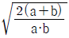
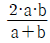
(정답률: 73%)
46. NOx의 제어는 연소방식의 변경과 배연가스의 처리기술의 2가지로 구분할 수 있는데, 다음 중 연소방식을 변환시켜 NOx의 생성을 감축시키는 방안으로 가장 거리가 먼 것은?
- 접촉산화법
- 물주입법
- 저과잉공기연소법
- 배기가스재순환법
(정답률: 60%)
47. 건식 탈황ㆍ탈질방법 중 하나인 전자선조사법의 프로세스 특징으로 가장 거리가 먼 것은?
- 연소배기가스에 암모니아 등을 첨가해 α, β, γ선, 전리성 방사선 등을 조사하여 배가스 중 NOx, SOx 화합물을 고체상 입자로 동시에 처리하는 방법이다.
- 부생물로 황산암모늄 및 질산암모늄을 생성한다.
- 구성이 복잡해 계내의 압력손실이 높고, 배가스의 변동등에 대처가 어렵다.
- NOx 및 SOx 제거율이 80% 이상을 달성할 수 있는 건식의 제거프로세스이다.
(정답률: 47%)
48. 점도 μ= 1.8 × 10-4g/cmㆍsec, 밀도 ρa=1.2× 10-3g/cm3의 정지 대기공간에서 등속으로 중력침강하는 직경 50㎛, 밀도 ρs= 1.8g/cm3의 구형입자의 중력침강속도는?
- 0.272 cm/sec
- 27.22 cm/sec
- 0.136 cm/sec
- 13.6 cm/sec
(정답률: 39%)
49. 유입계수 0.84, 속도압이 45mmH2O 일 때 후드의 압력손실은?
- 11 mmH2O
- 19 mmH2O
- 25 mmH2O
- 34 mmH2O
(정답률: 58%)
50. 아래 표와 같은 특성을 갖는 통풍방식은?
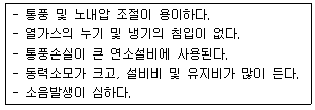
- 자연통풍
- 평형통풍
- 압입통풍
- 흡인통풍
(정답률: 45%)
51. 베르누이(Bernoulli)방정식에 대한 설명으로 옳지 않은 것은?
- 비압축성 유체로 유선을 따라 흐르는 흐름에 적용된다.
- 이상유체의 정상상태의 흐름이다.
- 액체 및 속도가 높은 기체의 경우에만 비교적 잘 맞는다.
- 압력수두 , 속도수두 , 위치수두의 합이 일정하다.
(정답률: 64%)
52. 전기집진장치의 유지관리에 관한 사항으로 옳지 않은 것은?
- 시동 시 고전압 회로의 절연저항이 1MΩ 이상이 되어야 한다.
- 시동 시 배출가스를 도입하기 최소 6시간 전에 애관용 히터를 가열하여 애자관 표면에 수분이나 먼지의 부착을 방지한다.
- 운전 시 2차 전류가 주기적으로 변동하는 것은 방전극에 의한 영향이 크다.
- 정지 시 접지저항은 적어도 년 1회 이상 점검하고 10Ω 이하로 유지한다.
(정답률: 54%)
53. 배출가스 중의 염소를 충전탑에서 물을 흡수액으로 사용하여 흡수시킬 때 효율이 85%이었다. 동일한 조건에서 98.27%의 효율을 얻기 위해서는 이론적으로 충전층의 높이를 몇 배로 하면 되는가?
- 2.36
- 2.14
- 1.86
- 1.58
(정답률: 70%)
54. 다음 입자상 물질의 크기를 결정하는 방법 중 입자상 물질의 그림자를 2개의 등면적으로 나눈 선의 길이를 직경으로 하는 입경은?
- 마틴직경
- 등면적경
- 피렛직경
- 투영면적경
(정답률: 87%)
55. 배출가스의 흐림이 층류일 때 입경 100㎛ 입자가 100% 침강하는데 필요한 중력 침강실의 길이는? (단, 중력 침강실의 높이 2m , 배출가스의 유속 4m/sec , 입자의 종말침강속도는 0.5 m/sec 이다. )
- 0.25m
- 4m
- 10m
- 16m
(정답률: 43%)
56. 중력식 집진장치의 집진율 향상조건에 관한 다음 설명 중 옳지 않은 것은?
- 침강실 내 처리가스 속도가 작을수록 미립자가 포집된다.
- 침강실 입구폭이 클수록 유속이 느려지며 미세한 입자가 포집된다.
- 다단일 경우에는 단수가 증가할수록 집진율은 커지나, 압력손실도 증가한다.
- 침강실의 높이가 높고, 중력장의 길이가 짧을수록 집진율은 높아진다.
(정답률: 68%)
57. 901.1 ppm의 NO를 함유하는 배기가스 450000 Sm3/h를 암모니아 선택적 접촉환원법으로 배연탈질 할 때 요구되는 암모니아의 양(Sm3/h)은? (단, 산소가 공존하는 상태이며, 표준상태 기준)
- 910.5
- 4⑤.5
- 202.5
- 101.5
(정답률: 53%)
58. 다음 중 물리적 흡착에 관한 설명으로 옳지 않은 것은?
- 기체분자량이 클수록 잘 흡착한다.
- 압력을 낮추거나 온도를 높임으로써 흡착물질을 흡착제로부터 탈착시킬 수 있다.
- 흡착제 표면에 여러층으로 흡착이 일어날 수 있다.
- 흡착열은 반응 엔탈피와 비슷하고 그 크기는 20-400 KJ/g ㆍ mole 정도이다.
(정답률: 42%)
59. 유량이 200 m3/min 인 공기흐름을 몸통 직경이 1.0m인 싸이클론을 이용하여 처리하고자 한다. 다음 표를 이용하여 새로 제작하려고 하는 싸이클론의 외부선회류의 유효회전수(Ne)를 구하면?
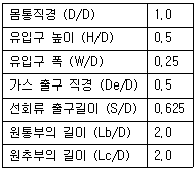
- 2
- 4
- 6
- 8
(정답률: 52%)
60. 악취처리방법에 관한 설명으로 옳지 않은 것은?
- 불꽃소각법에서의 연소온도는 600-800℃ 정도이다.
- 응축법은 유기용매증기를 저농도(20g/Sm3 이하)로 함유하는 배출가스에 적용되는 방법으로 응축후 액화된 유기용매는 회수할 필요가 없다.
- 활성탄을 사용하여 악취물질을 흡착시켜 제거할 경우에는 일반적으로 표면유속을 112-150m/min 정도로 한다.
- 촉매소각법에서는 보조연료가 필요없다.
(정답률: 53%)
4과목: 대기오염 공정시험기준(방법)
61. 다음은 비분산 적외선 분석계의 구성(순서)이다. ( )안에 들어갈 명칭을 옳게 나열한 것은? (단, 복광속 분석계)
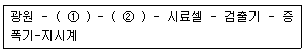
- ① 광학섹터 , ② 회전필터
- ① 회전섹터 , ② 광학필터
- ① 광학필터 , ② 회전필터
- ① 회전섹터 , ② 광학섹터
(정답률: 61%)
62. 환경대기 중의 시료채취에 관한 일반적인 주의사항으로 거리가 먼 것은?
- 악취물질의 채취는 되도록 짧은 시간내에 끝내고 입자상 물질중의 금속성분이나 발암성 물질 등은 되도록 장시간 채취한다.
- 시료채취 유량은 각 규정하는 범위 내에서는 되도록 많이 채취하는 것을 원칙으로 한다.
- 바람이나 눈, 비로부터 보호하기 위하여 측정기는 실내에 설치하고 채취구는 밖으로 연결할 경우에는 채취관 벽과의 반응, 흡착, 흡수 등에 의한 영향을 최소한도로 줄일 수 있는 재질과 방법을 선택한다.
- 입자상 물질을 채취할 경우에는 채취관 벽에 분진이 부착 또는 퇴적하는 것을 피하고 특히 채취관은 수평방향으로 연결할 경우에는 되도록 관이 길이를 길게 하고 곡률반경은 작게 한다.
(정답률: 62%)
63. 흡광차분광법(Differential Optical Absorption Spectroscopy)에 관한 설명으로 옳지 않은 것은?
- 흡광차분광법의 분석장치는 분석기와 광원부로 나누어지며, 분석기 내부는 분광기, 샘풀채취부, 검지부, 분석부 통신부 등으로 구성된다.
- 광원부는 발 ㆍ 수광부 및 광케이블로 구성되며, 외부 환경에 영향이 없는 구조로 구성된다.
- 발광부의 광원은 제논램프를 사용하며, 제논램프는 180-2850nm의 파장대역을 갖는다.
- 일반적으로 빛을 조사하는 발광부와 5-10m 정도 떨어진 곳에 설치되는 수광부 사이에 형성되는 빛의 이동경로를 통과하는 가스를 실시간으로 분석한다.
(정답률: 52%)
64. 다음 중 원자흡광분석방법으로 옳지 않은 것은?
- 수소-공기는 원자외 영역에서의 불꽃자체에 의한 흡수가 적다.
- 아세틸렌-아산화질소 불꽃은 불꽃중에서 해리하기 어려운 내화성산화물을 만들기 쉬운 원소의 분석에 적당하다.
- 프로판-공기 불꽃은 불꽃온도가 낮고 일부 원소에 대하여 높은 감도를 나타낸다.
- 불꽃중에 빛을 투과시킬 때 빛이 투과하는 불꽃중에서의 유효길이를 되도록 짧게 한다.
(정답률: 50%)
65. 다음은 환경대기 내의 석면 시험방법 중 시료채취 위치 및 시간에 관한 설명이다. ( )안에 알맞은 것은?
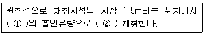
- ① 5L/min , ② 2시간 이상
- ① 5L/min , ② 4시간 이상
- ① 10L/min , ② 2시간 이상
- ① 10L/min , ② 4시간 이상
(정답률: 60%)
66. 원자흡광분석에서 발생하는 간섭 중 분석 시 사용하는 스펙트럼의 불꽃중에서 생성되는 목적원소의 원자증기 이외의 물질에 의하여 흡수되는 경우에 발생되는 것은?
- 이온학적 간섭
- 분광학적 간섭
- 물리적 간섭
- 화학적 간섭
(정답률: 74%)
67. 다음은 굴뚝 등에서 배출되는 매연의 링겔만 매연농도 분석방법이다. ( )안에 알맞은 것은?
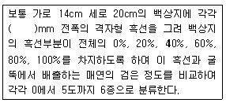
- 0 , 1.0 , 2.0 , 3.0 , 4.0
- 0 , 1.0 , 2.3 , 3.7 , 5.5
- 0 , 1.2 , 2.4 , 3.6 , 4.8
- 0 , 1.2 , 2.5 , 3.9 , 5.2
(정답률: 55%)
68. 환경대기 중 아황산가스 농도 측정을 위한 불꽃광도법(FPD)에 관한 설명으로 가장 거리가 먼 것은?
- 이 방법은 황화합물의 농도가 아황산가스 농도의 0.5% 이상일 때는 적당한 전처리를 하여 방해물질 제거 후에 측정해야 한다.
- 측정범위는 0.0⑤ - 1.0 ppm이다.
- 순도 99.8% 이상의 수소 또는 수소발생기를 사용한다.
- 재현성은 각 측정단계마다 최대눈금 값의 ±2% 이내이어야 한다.
(정답률: 16%)
69. 배출가스 중 먼지측정을 위한 반경 4.0m 원형굴뚝의 측정점 수는?
- 8
- 12
- 16
- 20
(정답률: 64%)
70. 다음 중 시험의 기재 및 용어에 관한 설명 중 옳지 않은 것은?
- “밀폐용기”라 함은 물질을 취급 또는 보관하는 동안에 이물이 들어가거나 내용물이 손실되지 않도록 보호하는 용기를 뜻한다.
- “감압 또는 진공” 이라 함은 따로 규정이 없는 한 15mmHg 이하를 뜻한다.
- “항량이 될 때까지 건조한다 또는 강열한다.” 라 함은 따로 규정이 없는 한 보통의 건조방법으로 1시간 더 건조 또는 강열할 때 전후 무게의 차가 매 g당 0.3mg 이하일 때를 뜻한다.
- “정량적으로 씻는다”함은 어떤 조작으로부터 다음 조작으로 넘어갈 때 사용한 비이커, 플라스크 등의 용기 및 여과막 등에 부착한 정량대상 성분을 증류수로 깨끗이 씻어 그 세액을 합하는 것을 뜻한다.
(정답률: 52%)
71. 황성분 1.6% 이하 함유한 액체연료를 사용하는 연소시설에서 배출되는 황산화물(표준산소농도를 적용받는 항목)의 실측농도측정 결과 700ppm 이었다. 배출가스 중의 실측산소농도는 7%, 표준산소농도는 4%이다. 황산화물의 농도(ppm)는?
- 750ppm
- 800ppm
- 850ppm
- 900ppm
(정답률: 56%)
72. 굴뚝 배출가스 내의 시안화수소 분석방법 중 질산은 적정법에서 초산(10V/V%)을 첨가하는 목적으로 가장 적합한 것은?
- 종말색의 변화를 쉽게 알기 위하여
- 방해물질을 제거하기 위하여
- 흡수액으로부터 시안화수소를 쉽게 추출하기 위하여
- pH의 조절을 위하여
(정답률: 49%)
73. NaOH용액을 흡수액으로 사용하는 분석대상가스가 아닌 것은?
- 포름알데히드
- 페놀
- 시안화수소
- 비소
(정답률: 57%)
74. 흡광차분광법 (Differential Optical Absorption Spectroscopy)의 검출방식에 관한 설명으로 옳지 않는 것은?
- 분광방식은 루프주입방식이 일반적이며 셉덤(Septum)방식, 셉덤레스(Septumless) 방식이 이용되기도 한다.
- 분광된 빛은 반사경을 통해 광전자증배관( Photo Multiplier Tube)검출기나 PDA(Photo Diode Array)검출기로 들어간다.
- 측정된 스펙트럼 데이터는 A/D 변환기에서 디지털 신호로 변환 분석장치에 입력된다.
- 검출기 앞에는 검출창(Detection Window)이 있어 특정범위의 스펙트럼만을 통과시킨다.
(정답률: 34%)
75. 환경대기 중의 질소산화물 농도 측정방법으로 거리가 먼 것은?
- 화학발광법
- 흡광차분광법
- 자외선형광법
- 야곱스호흐하이저법
(정답률: 48%)
76. 굴뚝 배출 가스상 물질의 시료채취장치 중 채취부에 사용되는 수은 마노미터의 규격기준은?
- 대기와 압력차가 100mmHg 이하인 것을 사용한다.
- 대기와 압력차가 100mmHg 이상인 것을 사용한다.
- 대기와 압력차가 500mmHg 이하인 것을 사용한다.
- 대기와 압력차가 500mmHg 이상인 것을 사용한다.
(정답률: 38%)
77. 굴뚝 배출가스 내 산소측정 분석계 중 측정셀, 자극보조 가스용 조리개, 검출소자, 증폭기 등으로 구성되는 것은?
- 자기풍 분석계
- 압력 검출형 자기력 분석계
- 전기화학식 질코니아 분석계
- 담벨형 자기력 분석계
(정답률: 67%)
78. 굴뚝 등을 통하여 대기중으로 배출되는 가스상 물질을 분석하기 위한 시료 채취방법에 대한 주의사항 중 옳지 않은 것은?
- 흡수병을 만일 공통으로 할 때에는 대상 성분이 달라질 때마다 묽은 산 또는 알칼리 용액과 물로 깨끗이 씻은 다음 다시 흡수액으로 3회 정도 씻은 후 사용한다.
- 가스미터는 500mmH2O 이내에서 사용한다.
- 습식 가스미터를 이동 또는 운반할 때에는 반드시 물을 빼고, 오랫동안 쓰지 않을 때에도 그와 같이 배수한다.
- 굴뚝내의 압력이 매우 큰 부압(-300mmH2O 정도 이하)인 경우에는 , 시료 채취용 굴뚝을 부설하여 용량이 큰 펌프를 써서 시료가스를 흡입하고 그 부설한 굴뚝에 채취구를 만든다.
(정답률: 75%)
79. 배출가스 유량 및 유속 측정 등에 사용되는 기구에 관한 설명 중 옳지 않은 것은?
- 피토우관의 바깥지름의 범위는 4-10mm 정도이고, 피토우관의 각 분기관 사이의 거리는 같아야 한다.
- 피토우관의 각 분기관과 오리피스 평면과의 거리는 바깥지름의 1.⑤-1.50배 사이에 있어야 한다.
- 차압계는 최소 0.5mmH2O 눈금을 읽을 수 있는 마노미터를 사용한다.
- 기압계는 2.54mmHg(34.54mmH2O) 이내에서 대기압력을 측정할 수 있는 수은, 아네로이드(Aneroid)등 기압계로 1회/년 이상 교정검사를 한 것을 사용한다.
(정답률: 44%)
80. 굴뚝 배출가스 중 휘발성유기화합물질(VOC) 시료채취방법으로 옳지 않은 것은?
- 흡착관방법의 시료흡인속도는 100-250mL/min 정도로 하며, 시료채취량은 1-5L 정도가 되도록 한다.
- 흡착관방법에서 시료를 채취한 흡착관은 양쪽 끝단을 단단히 막고 불소수지 재질의 필름등으로 밀봉하여 외부공기와의 접촉을 차단하여 분석 전까지 4℃이하에서 냉장보관하여 가능한 빠른 시일내에 분석한다.
- 테들라 백 방법에서 테들라 백은 새 것을 사용하는 것을 원칙으로 하되 만일 재사용시에는 제로가스와 동등 이상의 순도를 가진 수소나 아르곤가스를 채운 후 24시간 혹은 그 이상동안 백을 놓아둔 후 퍼지(Purge)시키는 조작을 반복한다.
- 테들라 백 방법에서는 2-10L 규격의 백을 사용하여 1-2L/min 정도로 시료를 흡인한다.
(정답률: 54%)
5과목: 대기환경관계법규
81. 대기환경보전법규상 자가측정의 대상 ㆍ 항목 및 방법기준 중 제3종 배출구의 측정횟수기준으로 옳은 것은? (단, 배출구에서 특정대기유해물질이 배출되지 않으며, 기타의 경우는 고려하지 않는다. )
- 반기마다 1회 이상
- 2개월마다 1회 이상
- 매월 2회 이상
- 매주 1회 이상
(정답률: 50%)
82. 환경정책기본법령상 SO2의 대기환경기준(ppm)으로 옳은 것은? (단, 연간 평균치)
- 002 이하
- 0.03 이하
- 0.⑤ 이하
- 0.06 이하
(정답률: 49%)
83. 대기환경보전법규상 비산먼지 발생을 억제하기 위한 시설의 설치 및 필요한 조치에 관한 기준 중 야외탈청 공정의 시설의 설치 및 조치에 관한 기준으로 옳지 않은 것은?
- 탈청구조물의 길이가 15m 미만인 경우에는 옥내작업을 할 것
- 풍속이 평균초속 5m 이상(강선건조업과 합성수지선건조업인 경우에는 8m 이상)인 경우에는 작업을 중지할 것
- 야외 작업 시에는 간이칸막이 등을 설치하여 먼지가 흩날리지 아니하도록 할 것이며, 작업 후 남은 것이 다시 흩날리지 아니하도록 할 것
- 야외 작업 시 이동식 집진시설을 설치할 것
(정답률: 70%)
84. 대기환경보전법상 시 ㆍ 도지사가 정밀검사업무를 대행하는 교통안전공단 또는 지정사업자가 고의나 중대한 과실로 검사업무를 부실하게 한 경우 업무정지처분에 갈음하여 부과할 수 있는 과징금의 부과처분기준은?
- 2억원 이하
- 1억원 이하
- 5천만원 이하
- 3천만원 이하
(정답률: 39%)
85. 대기환경보전법규상 자동차의 종류에 관한 사항으로 옳지 않은 것은? (단, 2009년 1월 1일 이후)
- 사람이나 화물을 운송하기 적합하게 제작된 것으로 엔진배기량이 1000cc 미만인 자동차를 경자동차라 한다.
- 원동기 정격출력이 19kW 이상 560kW 미만으로 건설공사에 사용하기 적합하게 제작된 것을 건설기계라 한다.
- 엔진배기량이 50cc 미만인 이륜자동차는 모페드형(스쿠터형을 포함한다)만 이륜자동차에 포함한다.
- 전기만을 동력으로 사용하는 자동차는 1회 충전 주행거리가 160km 이상인 경우 제 5종에 해당한다.
(정답률: 62%)
86. 대기환경보전법상 배출시설을 가동할 때 측정기기를 고의로 작동하지 아니하거나 정상적인 측정이 이루어지지 않도록 행위를 한 자에 대한 벌칙기준은?
- 7년 이하의 징역이나 1억원 이하의 벌금
- 5년 이하의 징역이나 3천만원 이하의 벌금
- 1년 이하의 징역이나 500만원 이하의 벌금
- 200만원 이하의 벌금
(정답률: 31%)
87. 대기환경보전법령상 배출시설 설치신고서에 첨부하여야 하는 서류로 가장 거리가 먼 것은?
- 배출시설의 월간 유지관리 계획서 및 오염물질 배출량을 예측한 명세서
- 방지시설의 연간 유지관리 계획서
- 방지시설의 일반도
- 배출시설 및 방지시설의 설치명세서
(정답률: 49%)
88. 악취방지법규상 다음 지정악취물질의 배출허용기준(ppm)으로 옳지 않은 것은? (단, 공업지역)
- n-발레르알데하이드 ; 0.02 이하
- 톨루엔 ; 30 이하
- 프로피온산 ; 0.07 이하
- I-발레르산 ; 0.⑤ 이하
(정답률: 44%)
89. 대기환경보전법규상 대기배출시설 변경신고를 하여야 하는 경우와 거리가 먼 것은?
- 배출시설을 임대하는 경우
- 새로운 대기오염물질을 배출하지 아니하고 배출량이 증가되지 아니하는 원료로 변경하는 경우
- 사업장의 명칭이나 대표자를 변경하는 경우
- 방지시설을 폐쇄하는 경우
(정답률: 44%)
90. 대기환경보전법령상 자동차 배출가스 규제 등에서 매출액 산정 및 위반행위 정도에 따른 과징금의 부과기준으로 옳지 않은 것은?
- 매출액 산정방법에서 “매출액”이란 그 자동차의 최초 제작시점부터 적발시점까지의 총 매출액으로 한다.
- 제작차에 대하여 인증을 받지 아니하고 자동차를 제작 ㆍ 판매한 행위에 대해서 위반행위의 정도에 따른 가중부과계수는 1을 적용한다.
- 제작차에 대하여 인증을 받은 내용과 다르게 자동차를 제작 ㆍ 판매한 행위에 대해서 위반행위의 정도에 따른 가중부과계수는 0.5를 적용한다.
- 과징금 산정방법 = 총 매출액 × 5/100 × 자중부과계수를 적용한다.
(정답률: 37%)
91. 다음은 대기환경보전법령상 환경부장관이 배출시설의 설치를 제한할 수 있는 경우이다. ( )안에 알맞은 것은?
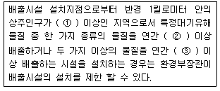
- ① 1만명 , ② 5톤 , ③ 15톤
- ① 1만명 , ② 10톤 , ③ 25톤
- ① 2만명 , ② 5톤 , ③ 15톤
- ① 2만명 , ② 10톤 , ③ 25톤
(정답률: 80%)
92. 다중이용시설 등의 실내공기질 관리법규상 신축 공동주택의 실내공기질 권고기준으로 옳지 않은 것은?
- 에틸벤젠 360 ㎍/m3 이하
- 스티렌 300 ㎍/m3 이하
- 폼알데하이드 210 ㎍/m3 이하
- 자일렌 1000 ㎍/m3 이하
(정답률: 70%)
93. 대기환경보전법상 용어의 뜻으로 옳지 않은 것은?
- “검댕”이란 연소할 때에 생기는 유리탄소가 응결하여 입자의 지름이 10미크론 이상이 되는 입자상물질을 말한다.
- “온실가스”란 적외선 복사열을 흡수하거나 다시 방출하여 온실효과를 유발하는 대기중의 가스상태 물질로서 이산화탄소, 메탄, 아산화질소, 수소불화탄소, 과불화탄소, 육불화황을 말한다.
- “저공해 엔진”이란 자동차에서 배출되는 대기오염물질을 줄이기 위한 엔진(엔진개조에 사용되는 부품을 포함한다.)으로서 환경부령으로 정하는 배출허용기준에 맞는 엔진을 말한다.
- “입자상 물질”이란 물질이 파쇄 ㆍ 선별 ㆍ 퇴적 ㆍ 이적될 때, 그 밖에 기계적으로 처리되거나 연소 ㆍ 합성 ㆍ 분해될 때에 발생하는 고체상 또는 액체상의 미세한 물질을 말한다.
(정답률: 77%)
94. 대기환경보전법규상 측정기기의 부착 ㆍ 운영등과 관련한 행정처분기준 중 굴뚝 자동측정기기가 환경분야 시험 ㆍ 검사 등에 관한 법률에 따른 환경오염공정시험기준에 부합하지 아니하도록 한 경우 위반차수별(1차 - 4차) 행정처분기준으로 옳은 것은?
- 경고 - 경고 - 허가취소 - 폐쇄
- 조치명령 - 경고 - 조업정지30일 - 조업정지60일
- 조업정지10일 - 조업정지30일 - 허가취소 - 폐쇄
- 경고 - 조치명령 - 조업정지10일 - 조업정지30일
(정답률: 58%)
95. 대기환경보전법규상 가스를 연료로 사용하는 초대형 승용차의 배출가스 보증기간 적용기준으로 옳은 것은? (단, 2009년 1월 1일 이후 제작자동차)
- 1년 또는 20, 000km
- 2년 또는 160, 000km
- 6년 또는 192, 000km
- 10년 또는 192, 000km
(정답률: 48%)
96. 다음은 대기환경보전법규상 운행차의 배출가스 정밀검사수수료 산출기준이다. ( )안에 알맞은 것은?
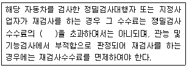
- 100분의 5
- 100분의 10
- 100분의 20
- 100분의 50
(정답률: 32%)
97. 대기환경보전법규상 휘발성유기화합물 배출억제 ㆍ 방지시설 설치 등에 관한 기준 중 주유소의 주유시설기준으로 옳지 않은 것은?
- 유증기 회수배관의 압력감쇄 ㆍ 누설 등을 4년마다 검사하고, 그 결과를 5년간 기록 ㆍ보존하여야 한다.
- 회수설비 유증기 회수율(회수량 / 주유량)이 적정범위(0.88-1.2)에 있는지를 반기별로 검사하고, 그 결과를 5년간 기록 ㆍ 보존하여야 한다.
- 회수설비의 처리효율 , 검사방법 등에 관한 사항은 국립환경과학원장이 정하여 고시한다.
- 회수설비의 처리효율은 80퍼센트 이상이어야 한다.
(정답률: 49%)
98. 대기환경보전법규상 위임업무 보고사항 중 자동차 연료 및 첨가제의 제조 ㆍ 판매 또는 사용에 대한 규제현황의 보고횟수기준은?
- 수시
- 연 1회
- 연 2회
- 연 4회
(정답률: 75%)
99. 대기환경보전법령상 대기오염 경보단계 중 “경보”가 발령되었을 때 조치사항으로 옳지 않은 것은?
- 주민의 실외활동 제한요청
- 자동차 사용의 제한명령
- 사업장의 연료사용량 감축 권고
- 사업장의 조업시간 단축명령
(정답률: 79%)
100. 대기환경보전법규상 총량규제를 하고자 할 때 고시내용에 반드시 포함될 사항으로 거리가 먼 것은? (단, 그 밖에 총량규제구역의 대기관리를 위하여 필요한 사항 등은 제외한다.)
- 대기오염물질의 저감계획
- 총량규제 대기오염물질
- 총량규제농도 및 환경영향평가
- 총량규제구역
(정답률: 55%)